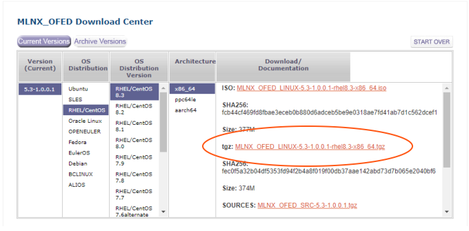

インストール
本章ではPG-Stromのインストール手順について説明します。
チェックリスト
- ハードウェア
- CUDA ToolkitのサポートするLinuxオペレーティングシステムを動作可能な x86_64 アーキテクチャのハードウェアが必要です。
- CPU、ストレージ、およびネットワークデバイスには特別な要件はありませんが、note002:HW Validation Listはハードウェア選定の上で参考になるかもしれません。
- GPUダイレクトSQL実行を利用するにはNVME規格に対応したSSD、またはRoCEに対応した高速NICが必要で、GPUと同一のPCIe Root Complex配下に接続されている必要があります。
- GPUデバイス
- PG-Stromを実行するには少なくとも一個のGPUデバイスがシステム上に必要です。これらはCUDA Toolkitでサポートされており、computing capability が6.0以降のモデル（Pascal世代以降）である必要があります。
- 002: HW Validation List - List of supported GPU modelsを参考にGPUを選定してください。
- Operating System
- PG-Stromの実行には、CUDA Toolkitによりサポートされているx86_64アーキテクチャ向けのLinux OSが必要です。推奨環境はRed Hat Enterprise LinuxまたはCentOSのバージョン8.xシリーズです。
- GPUダイレクトSQL実行（HeteroDBドライバ）を利用するには、Red Hat Enterprise Linux または CentOS のバージョン7.3以降または8.0以降が必要です。
- GPUダイレクトSQL実行（NVIDIAドライバ; 実験的）を利用するには Red Hat Enterprise Linux または CentOS のバージョン 8.3 以降と、Mellanox OFED (OpenFabrics Enterprise Distribution) ドライバが必要です。
- PostgreSQL
- PG-Strom v3.0の実行にはPostgreSQLバージョン11以降が必要です。
- PG-Stromが内部的に利用しているAPIの中には、これ以前のバージョンでは提供されていないものが含まれています。
- CUDA Toolkit
- PG-Stromの実行にはCUDA Toolkit バージョン11.4以降が必要です。
- PG-Stromが内部的に利用しているAPIの中には、これ以前のバージョンでは提供されていないものが含まれています。
- NVIDIA GPUDirect Storage (GDS)はCUDA Toolkit バージョン11.4以降に同梱されています。
GPUダイレクトSQL実行ドライバの選択
インストール作業の前に、GPUダイレクトSQLのソフトウェアスタックを検討してください。
GPUダイレクトSQLを実行するために必要なLinux kernelドライバには以下の２種類があります。
- HeteroDB NVME-Strom
- 2018年にリリースされ、PG-Strom v2.0以降でサポートされているHeteroDB社製の専用ドライバ。
- RHEL7.x/RHEL8.xに対応し、GPUDirect RDMA機構を用いてローカルのNVME-SSDからGPUへの直接データ読み出しが可能です。
- NVIDIA GPUDirect Storage
- NVIDIA社が開発している、NVME/NVME-oFデバイスからGPUへ直接データ読み出しを可能にするドライバで、2021年5月現在、パブリックベータ版が提供されています。
- PG-Strom v3.0で実験的に対応しており、RHEL8.3/8.4、およびUbuntu 18.04/20.04に対応しています。
- HeteroDB社を含む複数のパートナー企業が対応を表明しており、共有ファイルシステムやNVME-oFを通じたSDS(Software Defined Storage)デバイスからの直接読み出しも可能です。
どちらのドライバを使用しても、性能面での差異はほとんどありません。 しかし、GPUDirect Storageドライバの方が、対応するストレージやファイルシステムの種類といった周辺エコシステムや、ソフトウェア品質管理体制において優位性があると考えられるため、RHEL7/CentOS7でPG-Stromを利用する場合を除き、今後はGPUDirect Storageドライバの利用を推奨します。
Tips
RHEL8/CentOS8 または Ubuntu 18.04/20.04 の場合、以下のステップでインストールを進めてください。
- OSのインストール
- CUDA Toolkit のインストール
heterodb-extraモジュールのインストールheterodb-kmodモジュールのインストールは不要
- MOFEDドライバのインストール
- GPUDirect Storageモジュールのインストール
- PostgreSQLのインストール
- PG-Stromのインストール
- PostGISのインストール（必要に応じて）
RHEL7/CentOS7の場合、以下のステップでインストールを進めてください。
- OSのインストール
- CUDA Toolkit のインストール
heterodb-extraモジュールのインストールheterodb-kmodモジュールのインストール- MOFEDドライバ、GPUDirect Storageモジュールのインストールは不要
- PostgreSQLのインストール
- PG-Stromのインストール
- PostGISのインストール（必要に応じて）
OSのインストール
CUDA ToolkitのサポートするLinuxディストリビューションを選択し、個々のディストリビューションのインストールプロセスに従ってインストール作業を行ってください。 CUDA ToolkitのサポートするLinuxディストリビューションは、NVIDIA DEVELOPER ZONEにおいて紹介されています。
例えば、Red Hat Enterprise Linux 8.x系列、またはCentOS 8.x系列の場合、ベース環境として「最小限のインストール」を選択し、さらに以下のアドオンを選択してください。
- 開発ツール

サーバーへのOSインストール後、サードパーティーのパッケージをインストールするために、パッケージリポジトリの設定を行います。
なお、インストーラで「開発ツール」を選択しなかった場合、以下のコマンドでOSインストール後に追加インストールする事が可能です。
# dnf groupinstall 'Development Tools'
Tip
サーバに搭載されているGPUが新しすぎる場合、OS起動中にクラッシュ等の問題が発生する場合があります。
その場合、カーネル起動オプションにnouveau.modeset=0を追加して標準のグラフィックスドライバを無効化する事で
問題を回避できるかもしれません。
nouveauドライバの無効化
NVIDIA製GPU向けオープンソースの互換ドライバであるnouveauドライバがロードされている場合、nvidiaドライバをロードする事ができません。 この場合は、nouveauドライバの無効化設定を行った上でシステムを一度再起動してください。
nouveauドライバを無効化するには、以下の設定を/etc/modprobe.d/disable-nouveau.confという名前で保存し、dracutコマンドを実行してLinux kernelのブートイメージに反映します。
その後、システムを一度再起動してください。
# cat > /etc/modprobe.d/disable-nouveau.conf <<EOF
blacklist nouveau
options nouveau modeset=0
EOF
# dracut -f
# shutdown -r now
epel-releaseのインストール
PG-Stromの実行に必要なソフトウェアモジュールのいくつかは、EPEL(Extra Packages for Enterprise Linux)の一部として配布されています。 これらのソフトウェアを入手するためにEPELパッケージ群のリポジトリ定義をyumシステムに追加する必要があります。
EPELリポジトリから入手するパッケージの一つがDKMS(Dynamic Kernel Module Support)です。これは動作中のLinuxカーネルに適合したLinuxカーネルモジュールをオンデマンドでビルドするためのフレームワークで、NVIDIAのGPUデバイスドライバなど関連するカーネルモジュールが使用しています。 Linuxカーネルモジュールは、Linuxカーネルのバージョンアップに追従して再ビルドが必要であるため、DKMSなしでのシステム運用は現実的ではありません。
EPELリポジトリの定義は epel-release パッケージにより提供され、Fedora Projectのサイトから入手する事ができます。
CentOS8ではdnfコマンドを用いてのインストールも可能です。
-- For RHEL8
# dnf install https://dl.fedoraproject.org/pub/epel/epel-release-latest-8.noarch.rpm
-- For CentOS8
# dnf install epel-release
heterodb-swdcのインストール
PG-Stromほか関連パッケージはHeteroDB Software Distribution Centerから配布されています。 これらのソフトウェアを入手するために、HeteroDB-SWDCのリポジトリ定義をyumシステムに追加する必要があります。
HeteroDB-SWDCリポジトリの定義はheterodb-swdcパッケージにより提供されます。
WebブラウザなどでHeteroDB Software Distribution Centerへアクセスし、ページの先頭にリンクの記載されているheterodb-swdc-1.2-1.el8.noarch.rpmをダウンロードしてインストールしてください。
heterodb-swdcパッケージがインストールされると、HeteroDB-SWDCからソフトウェアを入手するためのyumシステムへの設定が追加されます。
以下のようにheterodb-swdcパッケージをインストールします。
# dnf install https://heterodb.github.io/swdc/yum/rhel8-noarch/heterodb-swdc-1.2-1.el8.noarch.rpm
CUDA Toolkitのインストール
本節ではCUDA Toolkitのインストールについて説明します。 既に最新のCUDA Toolkitをインストール済みであれば、本節の内容は読み飛ばして構いません
NVIDIAはCUDA Toolkitのインストールに２通りの方法を提供しています。一つは自己実行型アーカイブ（runfileと呼ばれる）によるもの。もう一つはRPMパッケージによるものです。 ソフトウェアの更新が容易である事から、後者のRPMパッケージによるインストールが推奨です。
CUDA Toolkitのインストール用パッケージはNVIDIA DEVELOPER ZONEからダウンロードする事ができます。 適切なOS、アーキテクチャ、ディストリビューション、バージョンを指定し、『rpm(network)』版を選択してください。

『rpm(network)』を選択すると、ネットワーク経由でCUDA ToolkitをRPMインストールするためのリポジトリ定義情報の追加方法と、関連パッケージをインストールするためのコマンドが表示されます。 ガイダンス通りにインストールを進めてください。
以下の例は、RHEL8/CentOS8向けのインストール手順です。
sudo dnf config-manager --add-repo https://developer.download.nvidia.com/compute/cuda/repos/rhel8/x86_64/cuda-rhel8.repo
sudo dnf clean all
sudo dnf -y module install nvidia-driver:latest-dkms
sudo dnf -y install cuda
正常にインストールが完了すると、/usr/local/cuda配下にCUDA Toolkitが導入されています。
$ ls /usr/local/cuda
bin include libnsight nvml samples tools
doc jre libnvvp nvvm share version.txt
extras lib64 nsightee_plugins pkgconfig src
インストールが完了したら、GPUが正しく認識されている事を確認してください。nvidia-smiコマンドを実行すると、以下の出力例のように、システムに搭載されているGPUの情報が表示されます。
$ nvidia-smi
Thu May 27 15:05:50 2021
+-----------------------------------------------------------------------------+
| NVIDIA-SMI 465.19.01 Driver Version: 465.19.01 CUDA Version: 11.3 |
|-------------------------------+----------------------+----------------------+
| GPU Name Persistence-M| Bus-Id Disp.A | Volatile Uncorr. ECC |
| Fan Temp Perf Pwr:Usage/Cap| Memory-Usage | GPU-Util Compute M. |
| | | MIG M. |
|===============================+======================+======================|
| 0 NVIDIA A100-PCI... Off | 00000000:8E:00.0 Off | 0 |
| N/A 44C P0 49W / 250W | 0MiB / 40536MiB | 0% Default |
| | | Disabled |
+-------------------------------+----------------------+----------------------+
| 1 NVIDIA A100-PCI... Off | 00000000:B1:00.0 Off | 0 |
| N/A 41C P0 54W / 250W | 0MiB / 40536MiB | 0% Default |
| | | Disabled |
+-------------------------------+----------------------+----------------------+
+-----------------------------------------------------------------------------+
| Processes: |
| GPU GI CI PID Type Process name GPU Memory |
| ID ID Usage |
|=============================================================================|
| No running processes found |
+-----------------------------------------------------------------------------+
HeteroDB 拡張モジュール
heterodb-extraモジュールは、PG-Stromに以下の機能を追加します。
- マルチGPUの対応
- GPUダイレクトSQL
- GiSTインデックス対応
- ライセンス管理機能
これらの機能を使用せず、オープンソース版の機能のみを使用する場合は heterodb-extra モジュールのインストールは不要です。
本節の内容は読み飛ばして構いません。
以下のように、SWDCからheterodb-extraパッケージをインストールしてください。
# dnf install heterodb-extra
ライセンスの有効化
heterodb-extraモジュールの全ての機能を利用するには、HeteroDB社が提供するライセンスの有効化が必要です。ライセンスなしで運用する事も可能ですが、その場合、下記の機能が制限を受けます。
- マルチGPUの利用
- GPUダイレクトSQLにおける複数NVME-SSDによるストライピング(md-raid0)
- GPUダイレクトSQLにおけるNVME-oFデバイスの利用
- GPU版PostGISにおけるGiSTインデックスの利用
ライセンスファイルは以下のような形式でHeteroDB社から入手する事ができます。
IAgIVdKxhe+BSer3Y67jQW0+uTzYh00K6WOSH7xQ26Qcw8aeUNYqJB9YcKJTJb+QQhjmUeQpUnboNxVwLCd3HFuLXeBWMKp11/BgG0FSrkUWu/ZCtDtw0F1hEIUY7m767zAGV8y+i7BuNXGJFvRlAkxdVO3/K47ocIgoVkuzBfLvN/h9LffOydUnHPzrFHfLc0r3nNNgtyTrfvoZiXegkGM9GBTAKyq8uWu/OGonh9ybzVKOgofhDLk0rVbLohOXDhMlwDl2oMGIr83tIpCWG+BGE+TDwsJ4n71Sv6n4bi/ZBXBS498qShNHDGrbz6cNcDVBa+EuZc6HzZoF6UrljEcl=
----
VERSION:2
SERIAL_NR:HDB-TRIAL
ISSUED_AT:2019-05-09
EXPIRED_AT:2019-06-08
GPU_UUID:GPU-a137b1df-53c9-197f-2801-f2dccaf9d42f
これを /etc/heterodb.license にコピーし、PostgreSQLを再起動します。
以下のようにPostgreSQLの起動ログにライセンス情報が出力され、ライセンスの有効化が行われた事が分かります。
:
LOG: HeteroDB Extra module loaded (API=20210525; NVIDIA cuFile)
LOG: HeteroDB License: { "version" : 2, "serial_nr" : "HDB-TRIAL", "issued_at" : "2020-11-24", "expired_at" : "2025-12-31", "gpus" : [ { "uuid" : "GPU-8ba149db-53d8-c5f3-0f55-97ce8cfadb28" } ]}
LOG: PG-Strom version 3.0 built for PostgreSQL 12
heterodb-kmod のインストール
このモジュールは、HeteroDB社によるnvme_stromカーネルモジュールを用いてGPUダイレクトSQLを使用する場合に必要です。
NVIDIA GPUDirect Storageを使用する場合、本節の内容は読み飛ばしてください。
heterodb-kmodパッケージはは(https://heterodb.github.io/swdc/)[HeteroDB Software Distribution Center]からフリーソフトウェアとして配布されています。すなわち、オープンソースソフトウェアではありません。
heterodb-swdcパッケージを導入済みであれば、dnf installコマンドを用いてRPMパッケージをダウンロード、インストールする事ができます。
# dnf install heterodb-kmod
問題なくインストールが完了していれば、modinfoコマンドでnvme_stromカーネルモジュールの存在を確認できるはずです。
# modinfo nvme_strom
filename: /lib/modules/4.18.0-240.22.1.el8_3.x86_64/extra/nvme_strom.ko.xz
version: 2.9-1.el8
license: BSD
description: SSD-to-GPU Direct SQL Module
author: KaiGai Kohei <kaigai@heterodbcom>
rhelversion: 8.3
depends:
name: nvme_strom
vermagic: 4.18.0-240.22.1.el8_3.x86_64 SMP mod_unload modversions
parm: verbose:Enables debug messages (1=on, 2=verbose) (int)
parm: stat_enabled:Enables run-time statistics (int)
parm: p2p_dma_max_depth:Max number of concurrent P2P DMA requests per NVME device
parm: p2p_dma_max_unitsz:Max length of single DMA request in kB
parm: fast_ssd_mode:Use SSD2GPU Direct even if clean page caches exist (int)
parm: license:License validation status
NVME-Stromカーネルモジュールには幾つかパラメータがあります。
| パラメータ名 | 型 | 初期値 | 説明 |
|---|---|---|---|
verbose |
int |
0 |
詳細なデバッグ出力を行います。 |
stat_enabled |
int |
1 |
nvme_statコマンドによる統計情報の採取を有効にします。 |
fast_ssd_mode |
int |
0 |
高速なNVME-SSDに適した動作モードです。 |
p2p_dma_max_depth |
int |
1024 |
NVMEデバイスのI/Oキューに同時に送出する事のできる非同期DMA要求の最大数です。 |
p2p_dma_max_unitsz |
int |
256 |
P2P DMA要求で一度に読み出すデータブロックの最大長（kB単位）です。 |
license |
string |
-1 |
ライセンスがロードされている場合、その失効日を表示します。 |
Note
fast_ssd_modeパラメータについての補足説明を付記します。
NVME-StromモジュールがGPUDirect SQLでのダイレクトデータ転送の要求を受け取ると、まず該当するデータブロックがOSのページキャッシュに載っているかどうかを調べます。
fast_ssd_modeが0の場合、データブロックが既にページキャッシュに載っていれば、その内容を呼び出し元のユーザ空間バッファに書き戻し、アプリケーションにCUDA APIを用いたHost->Device間のデータ転送を行うよう促します。これはPCIe x4接続のNVME-SSDなど比較的低速なデバイス向きの動作です。
一方、PCIe x8接続の高速SSDを使用したり、複数のSSDをストライピング構成で使用する場合は、バッファ間コピーの後で改めてHost->Device間のデータ転送を行うよりも、SSD-to-GPUのダイレクトデータ転送を行った方が効率的である事もあります。fast_ssd_modeが0以外の場合、NVME-StromドライバはOSのページキャッシュの状態に関わらず、SSD-to-GPUダイレクトのデータ転送を行います。
ただし、いかなる場合においてもOSのページキャッシュが dirty である場合にはGPUダイレクトでのデータ転送は行われません。
Note
p2p_dma_max_depthパラメータに関する補足説明を付記します。
NVME-Stromモジュールは、GPUダイレクトSQLを実行するため、データ転送のDMA要求を作成し、それをNVMEデバイスのI/Oキューに送出します。
NVMEデバイスの能力を越えるペースで非同期DMA要求が投入されると、NVME-SSDコントローラはDMA要求を順に処理する事になるため、DMA要求のレイテンシは極めて悪化します。（一方、NVME-SSDコントローラには切れ目なくDMA要求が来るため、スループットは最大になります）
DMA要求の発行から処理結果が返ってくるまでの時間があまりにも長いと、場合によっては、これが何らかのエラーと誤認され、I/O要求のタイムアウトとエラーを引き起こす可能性があります。そのため、NVMEデバイスが遊ばない程度にDMA要求をI/Oキューに詰めておけば、それ以上のDMA要求を一度にキューに投入するのは有害無益という事になります。
p2p_dma_max_depthパラメータは、NVMEデバイス毎に、一度にI/Oキューに投入する事のできる非同期P2P DMA要求の数を制御します。設定値以上のDMA要求を投入しようとすると、スレッドは現在実行中のDMAが完了するまでブロックされ、それによってNVMEデバイスの高負荷を避ける事が可能となります。
NVIDIA GPUDirect Storage
NVIDIA GPUDirect Storageは、2021年6月にリリースされた CUDA Toolkit バージョン11.4 の新機能です。
GPUDirect Storageを用いて、ローカルのNVME-SSDやリモートのNVME-oFデバイスからの直接読出しを行うには、 Mellanox社の提供するOpenFabrics Enterprise Distribution (MOFED) ドライバのインストールが必要です。 MOFEDドライバは、こちらからダウンロードする事ができます。
また、本節の内容は必ずしも最新のインストール手順を反映していない可能性があります。 NVIDIA社の公式ドキュメントもあわせて参照してください。
GPUダイレクトSQLを使用しない場合、本節の内容は読み飛ばして下さい。
MOFEDドライバのインストール
MOFEDドライバは、こちらからダウンロードする事ができます。
本節ではtgzアーカイブからのインストール例を紹介します。

tgzアーカイブを展開し、mlnxofedinstallスクリプトを実行します。この時、GPUDirect Storageのサポートを有効化するオプションを付加するのを忘れないでください。
# tar xvf MLNX_OFED_LINUX-5.3-1.0.0.1-rhel8.3-x86_64.tgz
# cd MLNX_OFED_LINUX-5.3-1.0.0.1-rhel8.3-x86_64
# ./mlnxofedinstall --with-nvmf --with-nfsrdma --enable-gds --add-kernel-support
# dracut -f
MOFEDドライバのビルドおよびインストール中、不足パッケージのインストールを要求される事があります。 ここまで手順通りにインストールを進めている場合、以下のパッケージが不足しているはずですので、これらを dnf コマンドで追加インストールしてください。
- createrepo
- kernel-rpm-macros
- python36-devel
- pciutils
- python36
- lsof
- kernel-modules-extra
- tcsh
- tcl
- tk
- gcc-gfortran
MOFEDドライバのインストールが完了すると、nvmeドライバなど、OS標準のものが置き換えられているはずです。
例えば以下の例では、OS標準のnvme-rdmaドライバ（/lib/modules/<KERNEL_VERSION>/kernel/drivers/nvme/host/nvme-rdma.ko.xz）ではなく、追加インストールされた/lib/modules/<KERNEL_VERSION>/extra/mlnx-nvme/host/nvme-rdma.koが優先して使用されています。
# modinfo nvme-rdma
filename: /lib/modules/4.18.0-240.22.1.el8_3.x86_64/extra/mlnx-nvme/host/nvme-rdma.ko
license: GPL v2
rhelversion: 8.3
srcversion: 49FD1FC7CCB178E4D859F29
depends: mlx_compat,rdma_cm,ib_core,nvme-core,nvme-fabrics
name: nvme_rdma
vermagic: 4.18.0-240.22.1.el8_3.x86_64 SMP mod_unload modversions
parm: register_always:Use memory registration even for contiguous memory regions (bool)
既にロードされているカーネルモジュール（例: nvme）を置き換えるため、ここで一度システムのシャットダウンと再起動を行います。
mlnxofedinstallスクリプトの完了後に、dracut -fを実行するのを忘れないでください。
GPUDirect Storageのインストール
続いて、GPUDirect Storageのインストールを行います。
# dnf install nvidia-gds
インストールが完了すると、gdscheckコマンドを用いてGPUDirect Storageの状態を検査する事ができます。
ここまでの手順で、NVME（ローカルNVME-SSD）とNVME-oF（リモート接続）がSupportedとなっているはずです。
# /usr/local/cuda/gds/tools/gdscheck -p
GDS release version: 1.0.0.82
nvidia_fs version: 2.7 libcufile version: 2.4
============
ENVIRONMENT:
============
=====================
DRIVER CONFIGURATION:
=====================
NVMe : Supported
NVMeOF : Supported
SCSI : Unsupported
ScaleFlux CSD : Unsupported
NVMesh : Unsupported
DDN EXAScaler : Unsupported
IBM Spectrum Scale : Unsupported
NFS : Unsupported
WekaFS : Unsupported
Userspace RDMA : Unsupported
--Mellanox PeerDirect : Enabled
--rdma library : Not Loaded (libcufile_rdma.so)
--rdma devices : Not configured
--rdma_device_status : Up: 0 Down: 0
=====================
CUFILE CONFIGURATION:
=====================
properties.use_compat_mode : true
properties.gds_rdma_write_support : true
properties.use_poll_mode : false
properties.poll_mode_max_size_kb : 4
properties.max_batch_io_timeout_msecs : 5
properties.max_direct_io_size_kb : 16384
properties.max_device_cache_size_kb : 131072
properties.max_device_pinned_mem_size_kb : 33554432
properties.posix_pool_slab_size_kb : 4 1024 16384
properties.posix_pool_slab_count : 128 64 32
properties.rdma_peer_affinity_policy : RoundRobin
properties.rdma_dynamic_routing : 0
fs.generic.posix_unaligned_writes : false
fs.lustre.posix_gds_min_kb: 0
fs.weka.rdma_write_support: false
profile.nvtx : false
profile.cufile_stats : 0
miscellaneous.api_check_aggressive : false
=========
GPU INFO:
=========
GPU index 0 NVIDIA A100-PCIE-40GB bar:1 bar size (MiB):65536 supports GDS
GPU index 1 NVIDIA A100-PCIE-40GB bar:1 bar size (MiB):65536 supports GDS
==============
PLATFORM INFO:
==============
IOMMU: disabled
Platform verification succeeded
Tips
RAIDを使用する場合の追加設定
GPUDirect Storageを利用してSoftware RAID (md-raid0) 区画からデータを読み出す場合、
以下の一行を/lib/udev/rules.d/63-md-raid-arrays.rules 設定に追加する必要があります。
IMPORT{program}="/usr/sbin/mdadm --detail --export $devnode"
その後、設定を反映させるためにシステムを再起動してください。 詳しくはNVIDIA GPUDirect Storage Installation and Troubleshooting Guideを参照してください。
PostgreSQLのインストール
本節ではRPMによるPostgreSQLのインストールについて紹介します。
ソースからのインストールに関しては既にドキュメントが数多く存在し、./configureスクリプトのオプションが多岐にわたる事から、ここでは紹介しません。
Linuxディストリビューションの配布するパッケージにもPostgreSQLは含まれていますが、必ずしも最新ではなく、PG-Stromの対応バージョンよりも古いものである事が多々あります。例えば、Red Hat Enterprise Linux 7.xやCentOS 7.xで配布されているPostgreSQLはv9.2.xですが、これはPostgreSQLコミュニティとして既にEOLとなっているバージョンです。
PostgreSQL Global Development Groupは、最新のPostgreSQLおよび関連ソフトウェアの配布のためにyumリポジトリを提供しています。 EPELの設定のように、yumリポジトリの設定を行うだけの小さなパッケージをインストールし、その後、PostgreSQLやその他のソフトウェアをインストールします。
yumリポジトリ定義の一覧は http://yum.postgresql.org/repopackages.php です。
PostgreSQLメジャーバージョンとLinuxディストリビューションごとに多くのリポジトリ定義がありますが、あなたのLinuxディストリビューション向けのPostgreSQL 11以降のものを選択する必要があります。
以下のステップで PostgreSQL のインストールを行います。
- yumリポジトリの定義をインストール
- OS標準のPostgreSQLモジュールの無効化
- RHEL8/CentOS8系列のみ
- PostgreSQLパッケージのインストール
例えばPostgreSQL v13を使用する場合、PG-Stromのインストールには postgresql13-serverおよびpostgresql13-develパッケージが必要です。
以下は、RHEL8/CentOS8においてPostgreSQL v13をインストールする手順の例です。
# dnf install -y https://download.postgresql.org/pub/repos/yum/reporpms/EL-8-x86_64/pgdg-redhat-repo-latest.noarch.rpm
# dnf -y module disable postgresql
# dnf install -y postgresql13-devel postgresql13-server
Note
Red Hat Enterprise Linux 8 および CentOS 8の場合、パッケージ名postgresqlがディストリビューション標準のものと競合してしまい、PGDG提供のパッケージをインストールする事ができません。そのため、dnf -y module disable postgresql コマンドを用いてディストリビューション標準のpostgresqlモジュールを無効化します。
Red Hat Enterprise Linux 7 および CentOS 7の場合はモジュールの無効化は必要ありません。PGDG提供のパッケージはメジャーバージョンにより識別されます。
PostgreSQL Global Development Groupの提供するRPMパッケージは/usr/pgsql-<version>という少々変則的なディレクトリにソフトウェアをインストールするため、psql等の各種コマンドを実行する際にはパスが通っているかどうか注意する必要があります。
postgresql-alternativesパッケージをインストールしておくと、各種コマンドへのシンボリックリンクを/usr/local/bin以下に作成するため各種オペレーションが便利です。また、複数バージョンのPostgreSQLをインストールした場合でも、alternativesコマンドによってターゲットとなるPostgreSQLバージョンを切り替える事が可能です。
# dnf install postgresql-alternatives
PG-Stromのインストール
本節ではPG-Stromのインストール方法について説明します。 推奨はRPMによるインストールですが、開発者向けにソースコードからのビルド方法についても紹介します。
RPMによるインストール
PG-Stromおよび関連パッケージはHeteroDB Software Distribution Centerより配布されています。 既にyumシステムへリポジトリを追加済みであれば、それほど作業は多くありません。
基盤となるPostgreSQLのバージョンごとに別個のPG-StromのRPMパッケージが準備されており、PostgreSQL v12用であればpg_strom-PG12パッケージを、PostgreSQL v13用であればpg_strom-PG13パッケージをインストールします。
これは、PostgreSQL拡張モジュールのバイナリ互換性に伴う制約です。
# dnf install -y pg_strom-PG13
以上でパッケージのインストールは完了です。
ソースからのインストール
開発者向けに、ソースコードからPG-Stromをビルドする方法についても紹介します。
ソースコードの入手
RPMパッケージと同様に、ソースコードのtarballをHeteroDB Software Distribution Centerから入手する事ができます。
ただ、tarballのリリースにはある程度のタイムラグが生じてしまうため、最新の開発版を使いたい場合にはPG-StromのGitHubリポジトリのmasterブランチをチェックアウトする方法の方が好まれるかもしれません。
$ git clone https://github.com/heterodb/pg-strom.git
Cloning into 'pg-strom'...
remote: Counting objects: 13797, done.
remote: Compressing objects: 100% (215/215), done.
remote: Total 13797 (delta 208), reused 339 (delta 167), pack-reused 13400
Receiving objects: 100% (13797/13797), 11.81 MiB | 1.76 MiB/s, done.
Resolving deltas: 100% (10504/10504), done.
PG-Stromのビルド
PG-Stromをビルドする時のコンフィグは、インストール先のPostgreSQLと厳密に一致していなければいけません。例えば、同じ構造体がビルド時のコンフィグによりPostgreSQLとPG-Stromで異なったレイアウトを持ってしまったとすれば、非常に発見の難しいバグを生み出してしまうかもしれません。 したがって、（一貫性のない状態を避けるため）PG-Stromは独自にconfigureスクリプトを走らせたりはせず、pg_configを使ってPostgreSQLのビルド時設定を参照します。
pg_configにパスが通っており、それがインストール先のPostgreSQLのものであれば、そのままmake、make installを実行します。
直接パスが通っていない場合は、makeコマンドにPG_CONFIG=...パラメータを与え、pg_configのフルパスを渡します。
$ cd pg-strom
$ make PG_CONFIG=/usr/pgsql-13/bin/pg_config
$ sudo make install PG_CONFIG=/usr/pgsql-13/bin/pg_config
インストール後の設定
データベースクラスタの作成
データベースクラスタの作成が済んでいない場合は、initdbコマンドを実行してPostgreSQLの初期データベースを作成します。
RPMインストールにおけるデフォルトのデータベースクラスタのパスは/var/lib/pgsql/<version number>/dataです。
postgresql-alternativesパッケージをインストールしている場合は、PostgreSQLのバージョンに拠らず/var/lib/pgdataで参照する事ができます。
# su - postgres
$ initdb -D /var/lib/pgdata/
The files belonging to this database system will be owned by user "postgres".
This user must also own the server process.
The database cluster will be initialized with locale "en_US.UTF-8".
The default database encoding has accordingly been set to "UTF8".
The default text search configuration will be set to "english".
Data page checksums are disabled.
fixing permissions on existing directory /var/lib/pgdata ... ok
creating subdirectories ... ok
selecting dynamic shared memory implementation ... posix
selecting default max_connections ... 100
selecting default shared_buffers ... 128MB
selecting default time zone ... Asia/Tokyo
creating configuration files ... ok
running bootstrap script ... ok
performing post-bootstrap initialization ... ok
syncing data to disk ... ok
initdb: warning: enabling "trust" authentication for local connections
You can change this by editing pg_hba.conf or using the option -A, or
--auth-local and --auth-host, the next time you run initdb.
Success. You can now start the database server using:
pg_ctl -D /var/lib/pgdata/ -l logfile start
postgresql.confの編集
続いて、PostgreSQLの設定ファイルである postgresql.conf を編集します。
PG-Stromを動作させるためには、最低限、以下のパラメータの設定が必要です。 これ以外のパラメータについても、システムの用途や想定ワークロードを踏まえて検討してください。
- shared_preload_libraries
- PG-Stromモジュールは
shared_preload_librariesパラメータによりpostmasterプロセスの起動時にロードされる必要があります。オンデマンドでの拡張モジュールのロードはサポート対象外です。したがって、以下の設定項目は必須です。 shared_preload_libraries = '$libdir/pg_strom'
- PG-Stromモジュールは
- max_worker_processes
- PG-Stromは数個のバックグラウンドワーカーを内部的に使用します。そのため、デフォルト値である 8 では、それ以外の処理に利用できるバックグラウンドワーカープロセス数があまりにも少なすぎてしまいます。
- 以下のように、ある程度の余裕を持った値を設定すべきです。
max_worker_processes = 100
- shared_buffers
- ワークロードによりますが、
shared_buffersの初期設定は非常に小さいため、PG-Stromが有効に機能する水準のデータサイズに対しては、ストレージへの読み書きが律速要因となってしまい、GPUの並列計算機能を有効に利用できない可能性があります。 - 以下のように、ある程度の余裕を持った値を設定すべきです。
shared_buffers = 10GB- 明らかにメモリサイズよりも大きなデータを処理する必要がある場合は、SSD-to-GPUダイレクトSQL実行の利用を検討してください。
- ワークロードによりますが、
- work_mem
- ワークロードによりますが、
work_memの初期設定は非常に小さいため、解析系クエリで最適なクエリ実行計画が選択されない可能性があります。 - 典型的な例は、ソート処理にオンメモリのクイックソートではなく、ディスクベースのマージソートを選択するといったものです。
- 以下のように、ある程度の余裕を持った値を設定すべきです。
work_mem = 1GB
- ワークロードによりますが、
OSのリソース制限の拡張
GPUダイレクトSQLを使用する場合は特に、同時に大量のファイルをオープンする事があるため、プロセスあたりファイルディスクリプタ数の上限を拡大しておく必要があります。
また、PostgreSQLのクラッシュ時に確実にコアダンプを生成できるよう、コアファイルのサイズ上限を制限しないことを推奨します。
PostgreSQLをsystemd経由で起動する場合、リソース制限に関する設定は/etc/systemd/system/postgresql-XX.service.d/pg_strom.confに記述します。
RPMによるインストールの場合、デフォルトで以下の内容が設定されます。
環境変数 CUDA_ENABLE_COREDUMP_ON_EXCEPTION に関する設定がコメントアウトされています。これは開発者向けのオプションで、これを有効にして起動すると、GPU側でエラーが発生した場合にGPUのコアダンプを生成させる事ができます。詳しくはCUDA-GDB:GPU core dump supportをご覧ください。
[Service]
LimitNOFILE=65536
LimitCORE=infinity
#Environment=CUDA_ENABLE_COREDUMP_ON_EXCEPTION=1
PostgreSQLの起動
PostgreSQLを起動します。
正常にセットアップが完了していれば、ログにPG-StromがGPUを認識した事を示すメッセージが記録されているはずです。 以下の例では、NVIDIA A100 (PCIE版; 40GB) を認識しており、また、NVME-SSDごとに近傍のGPUがどちらであるのか出力されています。
# systemctl start postgresql-13
# journalctl -u postgresql-13
-- Logs begin at Thu 2021-05-27 17:02:03 JST, end at Fri 2021-05-28 13:26:35 JST. --
May 28 13:09:33 kujira.heterodb.in systemd[1]: Starting PostgreSQL 13 database server...
May 28 13:09:33 kujira.heterodb.in postmaster[6336]: 2021-05-28 13:09:33.500 JST [6336] LOG: NVRTC 11.3 is successfully loaded.
May 28 13:09:33 kujira.heterodb.in postmaster[6336]: 2021-05-28 13:09:33.510 JST [6336] LOG: failed on open('/proc/nvme-strom'): No such file or directory - likely nvme_strom.ko is not loaded
May 28 13:09:33 kujira.heterodb.in postmaster[6336]: 2021-05-28 13:09:33.510 JST [6336] LOG: HeteroDB Extra module loaded (API=20210525; NVIDIA cuFile)
May 28 13:09:33 kujira.heterodb.in postmaster[6336]: 2021-05-28 13:09:33.553 JST [6336] LOG: HeteroDB License: { "version" : 2, "serial_nr" : "HDB-TRIAL", "issued_at" : "2021-05-27", "expired_at" : "2021-06-26", "gpus" : [ { "uuid" : "GPU-cca38cf1-ddcc-6230-57fe-d42ad0dc3315" }, { "uuid" : "GPU-13943bfd-5b30-38f5-0473-78979c134606" } ]}
May 28 13:09:33 kujira.heterodb.in postmaster[6336]: 2021-05-28 13:09:33.553 JST [6336] LOG: PG-Strom version 2.9 built for PostgreSQL 13
May 28 13:09:43 kujira.heterodb.in postmaster[6336]: 2021-05-28 13:09:43.748 JST [6336] LOG: PG-Strom: GPU0 NVIDIA A100-PCIE-40GB (108 SMs; 1410MHz, L2 40960kB), RAM 39.59GB (5120bits, 1.16GHz), PCI-E Bar1 64GB, CC 8.0
May 28 13:09:43 kujira.heterodb.in postmaster[6336]: 2021-05-28 13:09:43.748 JST [6336] LOG: PG-Strom: GPU1 NVIDIA A100-PCIE-40GB (108 SMs; 1410MHz, L2 40960kB), RAM 39.59GB (5120bits, 1.16GHz), PCI-E Bar1 64GB, CC 8.0
May 28 13:09:43 kujira.heterodb.in postmaster[6336]: 2021-05-28 13:09:43.755 JST [6336] LOG: - nvme0n1 (INTEL SSDPEDKE020T7; 0000:5e:00.0)
May 28 13:09:43 kujira.heterodb.in postmaster[6336]: 2021-05-28 13:09:43.755 JST [6336] LOG: - nvme1n1 (INTEL SSDPE2KX010T8; 0000:8a:00.0 --> GPU0)
May 28 13:09:43 kujira.heterodb.in postmaster[6336]: 2021-05-28 13:09:43.755 JST [6336] LOG: - nvme2n1 (INTEL SSDPE2KX010T8; 0000:8b:00.0 --> GPU0)
May 28 13:09:43 kujira.heterodb.in postmaster[6336]: 2021-05-28 13:09:43.755 JST [6336] LOG: - nvme4n1 (INTEL SSDPE2KX010T8; 0000:8d:00.0 --> GPU0)
May 28 13:09:43 kujira.heterodb.in postmaster[6336]: 2021-05-28 13:09:43.755 JST [6336] LOG: - nvme3n1 (INTEL SSDPE2KX010T8; 0000:8c:00.0 --> GPU0)
May 28 13:09:43 kujira.heterodb.in postmaster[6336]: 2021-05-28 13:09:43.755 JST [6336] LOG: - nvme6n1 (INTEL SSDPE2KX010T8; 0000:b5:00.0 --> GPU1)
May 28 13:09:43 kujira.heterodb.in postmaster[6336]: 2021-05-28 13:09:43.755 JST [6336] LOG: - nvme7n1 (INTEL SSDPE2KX010T8; 0000:b6:00.0 --> GPU1)
May 28 13:09:43 kujira.heterodb.in postmaster[6336]: 2021-05-28 13:09:43.755 JST [6336] LOG: - nvme5n1 (INTEL SSDPE2KX010T8; 0000:b4:00.0 --> GPU1)
May 28 13:09:43 kujira.heterodb.in postmaster[6336]: 2021-05-28 13:09:43.755 JST [6336] LOG: - nvme8n1 (INTEL SSDPE2KX010T8; 0000:b7:00.0 --> GPU1)
May 28 13:09:43 kujira.heterodb.in postmaster[6336]: 2021-05-28 13:09:43.909 JST [6336] LOG: redirecting log output to logging collector process
May 28 13:09:43 kujira.heterodb.in postmaster[6336]: 2021-05-28 13:09:43.909 JST [6336] HINT: Future log output will appear in directory "log".
May 28 13:09:44 kujira.heterodb.in systemd[1]: Started PostgreSQL 13 database server.
PG-Stromエクステンションの作成
最後に、PG-Stromに関連するSQL関数などのDBオブジェクトを作成します。
この手順はPostgreSQLのEXTENSION機能を用いてパッケージ化されており、SQLコマンドラインでCREATE EXTENSIONコマンドを実行するだけです。
なお、この手順は新しいデータベースを作成するたびに必要になる事に注意してください。
新しいデータベースを作成した時点で既にPG-Strom関連オブジェクトが作成されていてほしい場合は、予めtemplate1データベースでPG-Stromエクステンションを作成しておけば、CREATE DATABASEコマンドの実行時に新しいデータベースへ設定がコピーされます。
$ psql -U postgres
psql (13.3)
Type "help" for help.
postgres=# create extension pg_strom ;
CREATE EXTENSION
以上でインストール作業は完了です。
PostGISのインストール
PG-Stromは一部のPostGIS関数のGPU処理をサポートしています。 本節ではPostGISのインストール手順について説明を行いますが、必要に応じて読み飛ばしてください。
PostgreSQLと同様に、PostgreSQL Global Development GroupのyumリポジトリからPostGISモジュールをインストールする事ができます。 以下の例は、PostgreSQL v13向けにビルドされたPostGIS v3.2をインストールするものです。
Note
RHEL8およびCentOS8では、PostGISが必要とするパッケージのうちいくつかが初期状態で有効となっている
リポジトリに含まれていません。
そのため、RHEL8では--enablerepoオプションにcodeready-builder-for-rhel-8-x86_64-rpmsリポジトリを、
CentOS8ではPowerToolsリポジトリを指定して、これらパッケージに対する依存関係を解決してください。
-- For RHEL8
# dnf install -y postgis32_13 --enablerepo=codeready-builder-for-rhel-8-x86_64-rpms
-- For CentOS8
# dnf install -y postgis32_13 --enablerepo=powertools
データベースクラスタを作成してPostgreSQLサーバを起動し、SQLクライアントからCREATE EXTENSIONコマンドを実行してGeometryデータ型や地理情報分析のためのSQL関数を作成します。
これでPostGISのインストールは完了です。
postgres=# CREATE EXTENSION postgis;
CREATE EXTENSION